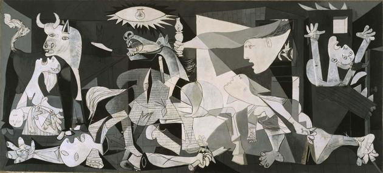

- Desarrollar habilidades para analizar y criticar obras de arte de manera constructiva.
Análisis y Crítica del Arte
Objetivos
Contenido:
El análisis de obras de arte es un proceso complejo que implica una combinación de observación, interpretación y evaluación. Este proceso ayuda a comprender mejor las intenciones del artista, el contexto histórico y cultural de la obra, y su impacto estético. A continuación, se desarrollan varios métodos de análisis de obras de arte:
Análisis Formal
Descripción
El análisis formal se centra en los aspectos visuales de una obra de arte, como la composición, el color, la línea, la forma, la textura y el espacio. Este método se basa en la observación detallada y objetiva de los elementos visuales sin considerar el contexto histórico o las intenciones del artista.
Componentes
- Composición: La disposición de los elementos dentro de la obra.
- Color: La paleta de colores utilizada y cómo interactúan entre sí.
- Línea:El uso de líneas para crear formas, contornos y texturas.
- Forma:Las figuras geométricas o libres presentes en la obra.
- Textura: La apariencia táctil de la superficie de la obra.
- Espacio:La representación del espacio y la perspectiva.
Ejemplo
Analizar "La noche estrellada" de Vincent van Gogh describiendo su uso de colores vibrantes, las líneas onduladas y la composición dinámica.
Análisis Iconográfico
Descripción
El análisis iconográfico se centra en el estudio de los símbolos y los temas representados en una obra de arte. Este método investiga los significados subyacentes y las referencias culturales o religiosas presentes en la obra.
Componentes
- Símbolos:Identificación y significado de los símbolos utilizados.
- Temas: Interpretación de los temas principales de la obra.
- Referencias: Contexto cultural, histórico o religioso que influye en la interpretación.
Ejemplo
 Analizar "La Última Cena" de Leonardo da Vinci, identificando los símbolos cristianos y su significado en el contexto religioso.
Analizar "La Última Cena" de Leonardo da Vinci, identificando los símbolos cristianos y su significado en el contexto religioso.
Análisis Contextual
Descripción
El análisis contextual examina la obra de arte dentro de su contexto histórico, cultural, social y político. Este método considera cómo estos factores influyen en la creación y recepción de la obra.
Componentes
- Contexto histórico: El periodo y los acontecimientos históricos en el momento de la creación.
- Contexto cultural: Las costumbres, creencias y prácticas culturales reflejadas en la obra.
- Contexto social: Las condiciones sociales y económicas que afectan al artista y a la obra.
- Contexto político: Los acontecimientos y ideologías políticas que pueden influir en la obra.
Ejemplo
 Analizar "Guernica" de Pablo Picasso considerando el contexto de la Guerra Civil Española y su impacto en la interpretación de la obra.
Análisis Psicológico
Descripción
El análisis psicológico investiga las emociones, pensamientos y motivaciones del artista y cómo se reflejan en la obra de arte. Este método puede incluir la psicología del color y la simbología personal del artista.
Componentes
- Emociones: Las emociones expresadas en la obra y su impacto en el espectador.
- Motivaciones: Las razones personales o psicológicas detrás de la creación de la obra.
- Psicología del color: El uso del color para evocar estados emocionales.
Ejemplo
Analizar los autorretratos de Frida Kahlo, explorando cómo reflejan su dolor físico y emocional.
Análisis Semiótico
Descripción
El análisis semiótico se enfoca en los signos y símbolos dentro de una obra de arte y cómo se comunican. Este método se basa en la teoría de los signos de Ferdinand de Saussure y Charles Sanders Peirce.
Componentes
- Signos: Elementos visuales que actúan como signos dentro de la obra.
- Símbolos: Signos con significados convencionales o culturales.
- Código visual: El sistema de signos utilizado por el artista.
Ejemplo
 Analizar las obras surrealistas de Salvador Dalí, interpretando los signos y símbolos dentro de su lenguaje visual.
Analizar las obras surrealistas de Salvador Dalí, interpretando los signos y símbolos dentro de su lenguaje visual.